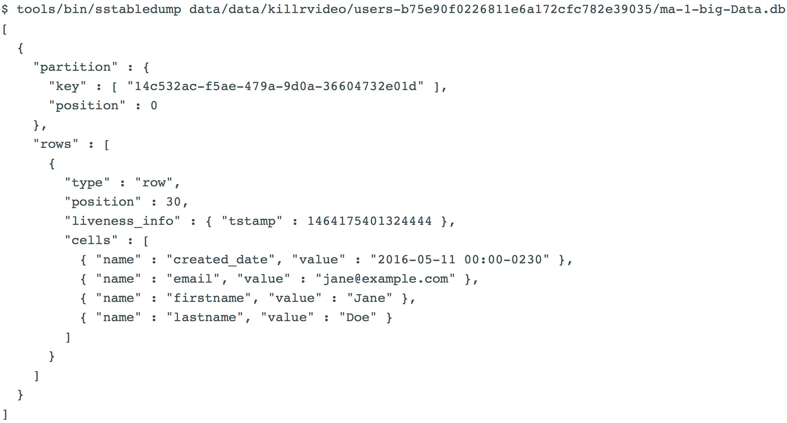

COPY table_name ( column, ...)
FROM ( 'file_name1', 'file_name2', ... | STDIN )
WITH option = 'value' AND ...
COPY table_name ( column , ... )
TO ( 'file_name1', 'file_name2', ... | STDOUT )
WITH option = 'value' AND ...COPY table_name ( column, ...)
FROM ( 'file_name1', 'file_name2', ... | STDIN )
WITH option = 'value' AND ...
COPY table_name ( column , ... )
TO ( 'file_name1', 'file_name2', ... | STDOUT )
WITH option = 'value' AND ...COPY is a cqlsh command that Imports and exports delimited data to and from Cassandra.
COPY FROM a delimited file
Why would we want to do this?
Some rules:
Procedure
Locate your delimited file and check options to use
---
lastname|firstname|email|created_date
Jones|Bob|bob@example.com|2016-02-03
Walsh|Gary|gary@example.com|2016-02-04
Nash|Sue|sue@example.com|2016-02-23
---$ COPY killrvideo.users FROM 'users.csv' WITH DELIMITER='|' AND HEADER=TRUEJust some examples
COPY TO a delimited file
cqlsh> SELECT * FROM users.killrvideo;lastname | firstname | email | created_date
-----------+----------------+-----------------+-------------
Jones | Bob | bob@example.com | 2016-02-03Assuming you have this user table in CQL.
After inserting data into the table, you can copy the data to a CSV file in another order by specifying the column names in parentheses after the table name:
COPY TO a delimited file
COPY users (firstname, lastname, created_date, email) TO 'users.csv'Provides the ability to:
Load pre-existing SSTables into
Prerequisites
Since sstableloader uses Cassandra gossip to figure out the topology of the cluster, make sure of the following:
The following properties are properly configured in cassandra.yaml for cluster that you are importing into:
Because sstableloader uses Cassandra gossip to figure out the topology of the cluster, make sure of the following:
The cassandra.yaml configuration file is in the classpath and properly configured.
At least one node in the cluster is configured as seed.
In the cassandra.yaml file, the following properties are properly configured for the cluster that you are importing into.
When using sstableloader to load external data, you must first generate SSTables.
If using DataStax Enterprise, you can use Sqoop to migrate external data to Cassandra.
How does sstableloader work?
$ sstableloader -d 110.82.155.1 /var/lib/cassandra/data/killrvideo/users/Allows you to see the raw data of a SSTable in a text format.
Cassandra 3.0 sstabledump output

Internal Representation Format
$ sstabledump data/data/killrvideo/users-b75e90f0226811e6a172cfc782e39035/ma-1-big-Data.db -d
[14c532ac-f5ae-479a-9d0a-36604732e01d]@0 Row[info=[ts=1464175401324444] ]: |
[created_date=2016-05-11 00:00-0230 ts=1464175401324444], [email=jane@example.com ts=1464175401324444], [firstname=Jane ts=1464175401324444], [lastname=Doe ts=1464175401324444]Spark provides convenient functionality for loading large external datasets into Cassandra tables in parallel
Ingesting files in CSV, TSV, JSON, XML, and other formats
If file is stored in Cassandra File System
If file is stored in a local file system, to achieve a desired level of parallelism
case class User (userid: java.util.UUID,
firstname: String,
lastname: String,
email: String,
created_date: java.util.Date)
val users =
sc.textFile("cfs:.../users.csv")
.repartition(2 * sc.defaultParallelism)
.map( line => line.split(",") match
{ case Array(id, firstname, lastname, email, created_date) =>
User(java.util.UUID.fromString(id),
firstname,
lastname,
email,
new java.text.SimpleDateFormat("yyyy-mm-dd").parse(created_date))
} )
users.saveToCassandra("killrvideo", "users")Loading a CSV file into a Cassandra table with validation
val beforeCount = sc.cassandraTable("killrvideo", "users").count
val users =
sc.textFile("file:///home/student/users.csv")
.repartition(2 * sc.defaultParallelism)
.cache // The RDD is used in two actions
val loadCount = users.count
users.map(...).saveToCassandra("killrvideo", "users")
val afterCount = sc.cassandraTable("killrvideo", "users").count
if (loadCount - (afterCount - beforeCount) > 0)
println ("Errors or upserts - further validation required")